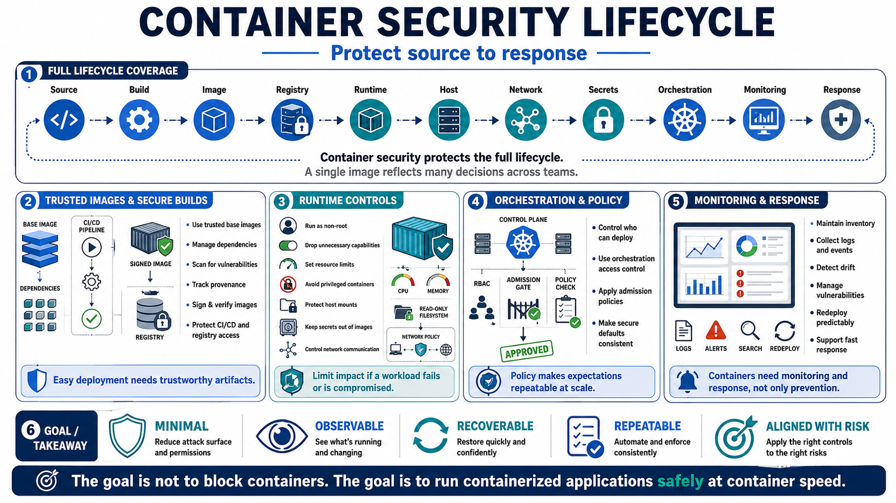

Course Summary and Key Takeaways
Connecting to LMS... Progress: in progress

Narration
Container security protects the full lifecycle: source, build, image, registry, runtime, host, network, secrets, orchestration, monitoring, and response. A container image may look like a single artifact, but it represents many decisions made by developers, platform teams, security teams, operations teams, and service providers. Strong programs make those decisions visible, reviewable, and repeatable.
Trusted images and secure builds give deployments a safer starting point. Base image hygiene, dependency management, vulnerability scanning, image provenance, signing and verification concepts, registry access control, and CI/CD protections reduce the chance that untrusted or vulnerable artifacts reach production. Containers make deployment easy; security ensures that what gets deployed is the thing the organization intended to run.
Runtime controls limit impact. Running as non-root where practical, dropping unnecessary capabilities, using resource limits, avoiding privileged configurations, protecting host mounts, separating secrets from images, and controlling network communication all reduce what a workload can do if it fails or is compromised. Orchestration access control and admission policy help make those expectations consistent across many workloads.
Finally, containers need monitoring and response, not just preventive controls. Inventory, logs, events, drift detection, vulnerability management, and repeatable redeployment help teams operate safely at container speed. The goal is not to block containers. The goal is to make containerized applications minimal, observable, recoverable, and aligned with real security risk decisions.